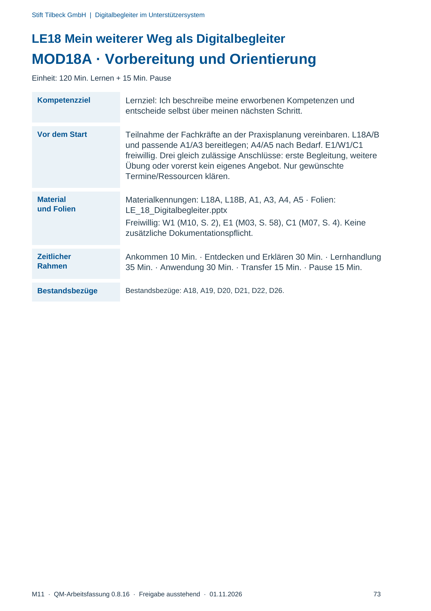
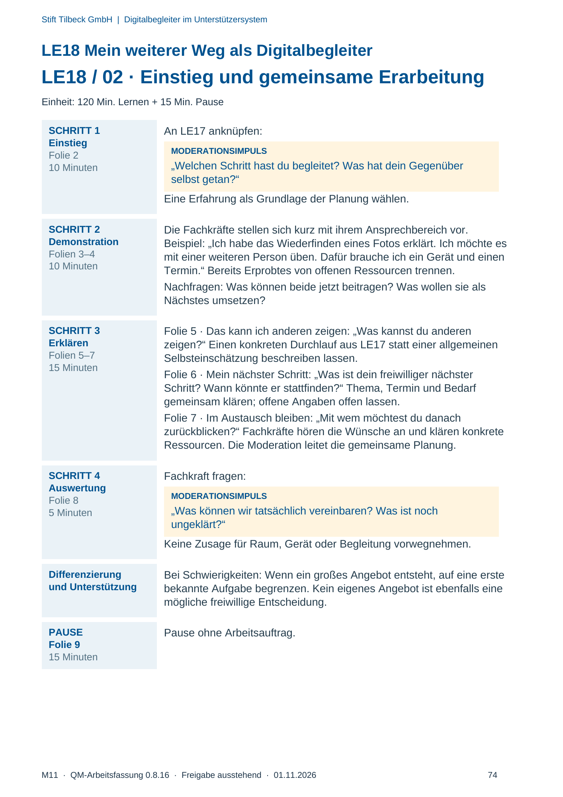
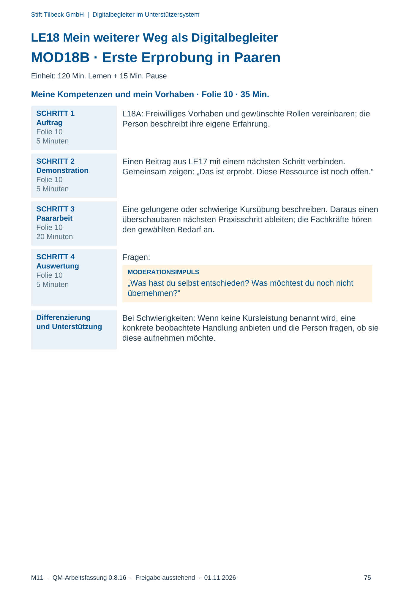
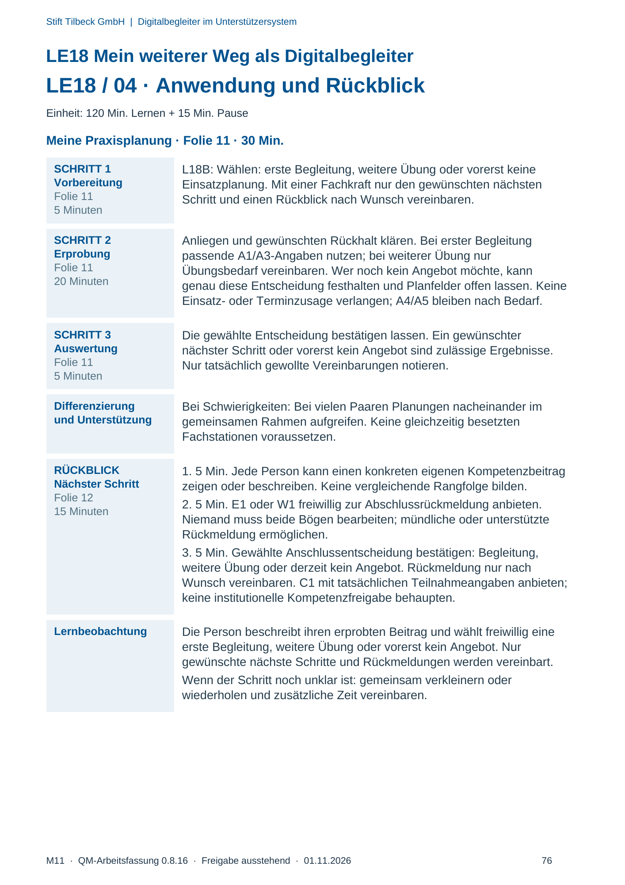

M11 · Originalseite 73, 74, 75, 76
Durchführungshilfe
Gezielte Original-Druckauswahl.
Fragen und Ankreuzfelder werden auf dem Ausdruck bearbeitet. Die Lesefassung speichert keine Antworten.
Lesefassung · Seite 73
Stift Tilbeck GmbH | Digitalbegleiter im Unterstützersystem
LE18 Mein weiterer Weg als Digitalbegleiter
MOD18A · Vorbereitung und Orientierung
Einheit: 120 Min. Lernen + 15 Min. Pause
Kompetenzziel Lernziel: Ich beschreibe meine erworbenen Kompetenzen und
entscheide selbst über meinen nächsten Schritt.
Vor dem Start Teilnahme der Fachkräfte an der Praxisplanung vereinbaren. L18A/B
und passende A1/A3 bereitlegen; A4/A5 nach Bedarf. E1/W1/C1
freiwillig. Drei gleich zulässige Anschlüsse: erste Begleitung, weitere
Übung oder vorerst kein eigenes Angebot. Nur gewünschte
Termine/Ressourcen klären.
Material
und Folien
Materialkennungen: L18A, L18B, A1, A3, A4, A5 · Folien:
LE_18_Digitalbegleiter.pptx
Freiwillig: W1 (M10, S. 2), E1 (M03, S. 58), C1 (M07, S. 4). Keine
zusätzliche Dokumentationspflicht.
Zeitlicher
Rahmen
Ankommen 10 Min. · Entdecken und Erklären 30 Min. · Lernhandlung
35 Min. · Anwendung 30 Min. · Transfer 15 Min. · Pause 15 Min.
Bestandsbezüge Bestandsbezüge: A18, A19, D20, D21, D22, D26.
Originalseite ansehen

Lesefassung · Seite 74
Stift Tilbeck GmbH | Digitalbegleiter im Unterstützersystem
LE18 Mein weiterer Weg als Digitalbegleiter
LE18 / 02 · Einstieg und gemeinsame Erarbeitung
Einheit: 120 Min. Lernen + 15 Min. Pause
SCHRITT 1
Einstieg
Folie 2
10 Minuten
An LE17 anknüpfen:
MODERATIONSIMPULS
„Welchen Schritt hast du begleitet? Was hat dein Gegenüber
selbst getan?“
Eine Erfahrung als Grundlage der Planung wählen.
SCHRITT 2
Demonstration
Folien 3–4
10 Minuten
Die Fachkräfte stellen sich kurz mit ihrem Ansprechbereich vor.
Beispiel: „Ich habe das Wiederfinden eines Fotos erklärt. Ich möchte es
mit einer weiteren Person üben. Dafür brauche ich ein Gerät und einen
Termin.“ Bereits Erprobtes von offenen Ressourcen trennen.
Nachfragen: Was können beide jetzt beitragen? Was wollen sie als
Nächstes umsetzen?
SCHRITT 3
Erklären
Folien 5–7
15 Minuten
Folie 5 · Das kann ich anderen zeigen: „Was kannst du anderen
zeigen?“ Einen konkreten Durchlauf aus LE17 statt einer allgemeinen
Selbsteinschätzung beschreiben lassen.
Folie 6 · Mein nächster Schritt: „Was ist dein freiwilliger nächster
Schritt? Wann könnte er stattfinden?“ Thema, Termin und Bedarf
gemeinsam klären; offene Angaben offen lassen.
Folie 7 · Im Austausch bleiben: „Mit wem möchtest du danach
zurückblicken?“ Fachkräfte hören die Wünsche an und klären konkrete
Ressourcen. Die Moderation leitet die gemeinsame Planung.
SCHRITT 4
Auswertung
Folie 8
5 Minuten
Fachkraft fragen:
MODERATIONSIMPULS
„Was können wir tatsächlich vereinbaren? Was ist noch
ungeklärt?“
Keine Zusage für Raum, Gerät oder Begleitung vorwegnehmen.
Differenzierung
und Unterstützung
Bei Schwierigkeiten: Wenn ein großes Angebot entsteht, auf eine erste
bekannte Aufgabe begrenzen. Kein eigenes Angebot ist ebenfalls eine
mögliche freiwillige Entscheidung.
PAUSE
Folie 9
15 Minuten
Pause ohne Arbeitsauftrag.
Originalseite ansehen

Lesefassung · Seite 75
Stift Tilbeck GmbH | Digitalbegleiter im Unterstützersystem
LE18 Mein weiterer Weg als Digitalbegleiter
MOD18B · Erste Erprobung in Paaren
Einheit: 120 Min. Lernen + 15 Min. Pause
Meine Kompetenzen und mein Vorhaben · Folie 10 · 35 Min.
SCHRITT 1
Auftrag
Folie 10
5 Minuten
L18A: Freiwilliges Vorhaben und gewünschte Rollen vereinbaren; die
Person beschreibt ihre eigene Erfahrung.
SCHRITT 2
Demonstration
Folie 10
5 Minuten
Einen Beitrag aus LE17 mit einem nächsten Schritt verbinden.
Gemeinsam zeigen: „Das ist erprobt. Diese Ressource ist noch offen.“
SCHRITT 3
Paararbeit
Folie 10
20 Minuten
Eine gelungene oder schwierige Kursübung beschreiben. Daraus einen
überschaubaren nächsten Praxisschritt ableiten; die Fachkräfte hören
den gewählten Bedarf an.
SCHRITT 4
Auswertung
Folie 10
5 Minuten
Fragen:
MODERATIONSIMPULS
„Was hast du selbst entschieden? Was möchtest du noch nicht
übernehmen?“
Differenzierung
und Unterstützung
Bei Schwierigkeiten: Wenn keine Kursleistung benannt wird, eine
konkrete beobachtete Handlung anbieten und die Person fragen, ob sie
diese aufnehmen möchte.
Originalseite ansehen

Lesefassung · Seite 76
Stift Tilbeck GmbH | Digitalbegleiter im Unterstützersystem
LE18 Mein weiterer Weg als Digitalbegleiter
LE18 / 04 · Anwendung und Rückblick
Einheit: 120 Min. Lernen + 15 Min. Pause
Meine Praxisplanung · Folie 11 · 30 Min.
SCHRITT 1
Vorbereitung
Folie 11
5 Minuten
L18B: Wählen: erste Begleitung, weitere Übung oder vorerst keine
Einsatzplanung. Mit einer Fachkraft nur den gewünschten nächsten
Schritt und einen Rückblick nach Wunsch vereinbaren.
SCHRITT 2
Erprobung
Folie 11
20 Minuten
Anliegen und gewünschten Rückhalt klären. Bei erster Begleitung
passende A1/A3-Angaben nutzen; bei weiterer Übung nur
Übungsbedarf vereinbaren. Wer noch kein Angebot möchte, kann
genau diese Entscheidung festhalten und Planfelder offen lassen. Keine
Einsatz- oder Terminzusage verlangen; A4/A5 bleiben nach Bedarf.
SCHRITT 3
Auswertung
Folie 11
5 Minuten
Die gewählte Entscheidung bestätigen lassen. Ein gewünschter
nächster Schritt oder vorerst kein Angebot sind zulässige Ergebnisse.
Nur tatsächlich gewollte Vereinbarungen notieren.
Differenzierung
und Unterstützung
Bei Schwierigkeiten: Bei vielen Paaren Planungen nacheinander im
gemeinsamen Rahmen aufgreifen. Keine gleichzeitig besetzten
Fachstationen voraussetzen.
RÜCKBLICK
Nächster Schritt
Folie 12
15 Minuten
1. 5 Min. Jede Person kann einen konkreten eigenen Kompetenzbeitrag
zeigen oder beschreiben. Keine vergleichende Rangfolge bilden.
2. 5 Min. E1 oder W1 freiwillig zur Abschlussrückmeldung anbieten.
Niemand muss beide Bögen bearbeiten; mündliche oder unterstützte
Rückmeldung ermöglichen.
3. 5 Min. Gewählte Anschlussentscheidung bestätigen: Begleitung,
weitere Übung oder derzeit kein Angebot. Rückmeldung nur nach
Wunsch vereinbaren. C1 mit tatsächlichen Teilnahmeangaben anbieten;
keine institutionelle Kompetenzfreigabe behaupten.
Lernbeobachtung Die Person beschreibt ihren erprobten Beitrag und wählt freiwillig eine
erste Begleitung, weitere Übung oder vorerst kein Angebot. Nur
gewünschte nächste Schritte und Rückmeldungen werden vereinbart.
Wenn der Schritt noch unklar ist: gemeinsam verkleinern oder
wiederholen und zusätzliche Zeit vereinbaren.
Originalseite ansehen
